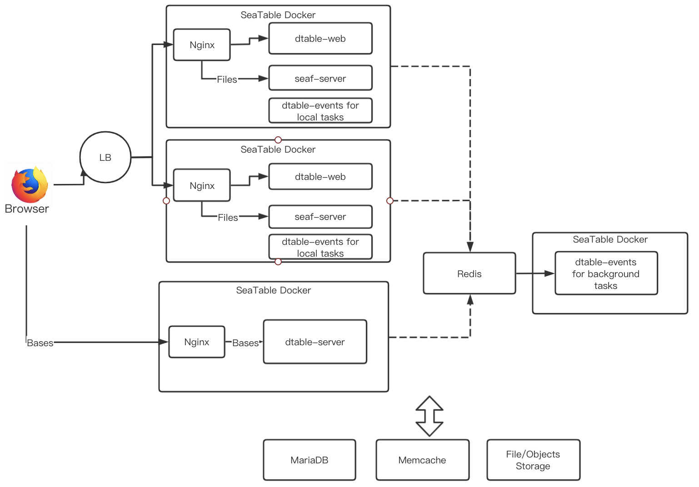

SeaTable Cluster¶
SeaTable EE support cluster for better performance.
A general architecture is like following:

Note
- All nodes use the same docker image, with a different docker compose file and seatable-controller.conf to control the behaviour.
- dtable-server does not support multiple instances yet
In the following manual, we will show the steps to setup a two nodes deployment
- A dtable-web node running dtable-web, seaf-server and dtable-events
- A dtable-server node
Setup dtable-web nodes¶
First, setup a one node deployment according to Enterprise-Edition
Modify configuration file¶
Modify docker-compose.yml to let Redis can be accessed from another node
redis:
image: redis:5.0.7
container_name: seatable-redis
ports:
"192.xx.xx.xx:6379:6379" # dtable-web server's IP
Modify dtable-web configuration file /Your SeaTable data volume/seatable/conf/dtable_web_settings.py
USE_INNER_FILESERVER_FOR_DTABLE_SERVER = False
USE_INNER_DTABLE_SERVER = False
DTABLE_SERVER_URL = 'https://example.seatable.com/' # dtable-server's url
DTABLE_SOCKET_URL = 'https://example.seatable.com/' # dtable-server's url
Create configuration file : /Your SeaTable data volume/seatable/conf/seatable-controller.conf
ENABLE_CCNET_SERTVER=true
ENABLE_SEAFILE_SERTVER=true
ENABLE_DTABLE_WEB=true
ENABLE_DTABLE_SERVER=false
ENABLE_DTABLE_EVENTS=true
DTABLE_EVENTS_TASK_MODE=all
DTABLE_EVENTS_TASK_MODE can be all, foreground, background. Here we use all. If you want to deploy a separate background node for running dtable-events, use foreground here.
Restart dtable-web server¶
docker-compose up -d
docker exec -it seatable bash
seatable.sh
When you see following in the output log, it means success:
Skip dtable-server
SeaTable started
Setup dtable-server¶
Copy and modify docker-compose.yml¶
The default directory for SeaTable is /opt/seatable. Create the directory:
mkdir /opt/seatable
Copy the docker-compose.yml file on the dtable-web server and modify docker-compose.yml.
vim /opt/seatable/docker-compose.yml
version: '2.0'
services:
seatable:
image: docker.seafile.top/seafileltd/seatable-pro-server:1.6.5
container_name: seatable
ports:
- "80:80"
- "443:443" # If https is enabled, cancel the comment.
volumes:
- /opt/seatable/shared:/shared # Requested, specifies the path to Seafile data persistent store.
environment:
- SEATABLE_SERVER_HOSTNAME=example.seatable.com # Specifies your host name if https is enabled
- SEATABLE_SERVER_LETSENCRYPT=True
- TIME_ZONE=Asia/Shanghai # Optional, default is UTC. Should be uncomment and set to your local time zone.
networks:
- dtable-net
networks:
dtable-net:
Copy and modify configuration file¶
Prepare configuration file directory
mkdir -p /opt/seatable/shared/seatable/conf
Copy the configuration file on the dtable-web server to the conf directory.
Modify the dtable-server configuration file : /Your SeaTable data volume/seatable/conf/dtable_server_config.json
{
"host": "mysql host",
"user": "mysql uer",
"password": "password",
"database": "dtable_db",
"port": 3306,
"private_key": "xxx",
"dtable_web_service_url": "xxx", # dtable-web server's URL
"redis_host": "192.xx.xx.xx", # dtable-web server's IP
"redis_port": 6379,
"redis_password": ""
}
Modify the Nginx configuration file : /Your SeaTable data volume/seatable/conf/nginx.conf
upstream dtable_servers {
server 127.0.0.1:5000;
keepalive 15;
}
server {
if ($host = example.seatable.com) {
return 301 https://$host$request_uri;
}
listen 80;
server_name example.seatable.com;
return 404;
}
server {
server_name example.seatable.com;
listen 443 ssl;
ssl_certificate /shared/ssl/<your-ssl.cer>;
ssl_certificate_key /shared/ssl/<your-ssl.key>;
proxy_set_header X-Forwarded-For $remote_addr;
location /socket.io {
proxy_pass http://dtable_servers;
...
}
location / {
if ($request_method = 'OPTIONS') {
add_header Access-Control-Allow-Origin *;
add_header Access-Control-Allow-Methods GET,POST,PUT,DELETE,OPTIONS;
add_header Access-Control-Allow-Headers "deviceType,token, authorization, content-type";
return 204;
}
proxy_pass http://dtable_servers;
...
}
}
Create configuration file : /Your SeaTable data volume/seatable/seatable-controller.conf
ENABLE_CCNET_SERTVER=false
ENABLE_SEAFILE_SERTVER=false
ENABLE_DTABLE_WEB=false
ENABLE_DTABLE_SERVER=true
ENABLE_DTABLE_EVENTS=false
DTABLE_EVENTS_TASK_MODE=all
Start dtable-server¶
docker-compose up -d
docker exec -it seatable bash
seatable.sh
When you see following in the output log, it means success:
Skip ccnet-server
Skip seafile-server
Skip dtable-events
Skip dtable-web
SeaTable started